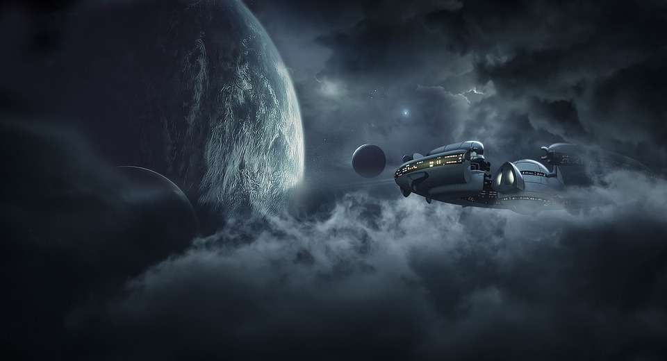

You are overcome with excitement by all the options for adventures in the urban settings of Kepliron. In the capital city of Hrithik, you start looking for various restaurants to try out, along with any nearby leisure activities. You enjoy all the food, beverages, and desserts you come across, as well as the countless friendly and helpful citizens. You're having so much fun and you start to feel like you should just settle on Kepliron, especially in the city of Hrithik, permanently one day.

On the last day of your allowed stay, you ask a random girl at the pub for directions. After some small talk following her curiosity about your place of origin, she turns out to be very kind, welcoming, and lively. Her name is Katrina, and the two of you click pretty quickly and she takes you to some hole-in-the-wall restaurants for some even more unique dishes as well as some unknown spots to see views of Hrithik. After a few hours, Katrina insists on taking you home to meet her mother, who she says prepares an amazing local delicacy that you should try. You ask about her father, and Katrina says she assumes he abandoned her and her mother before she was born, as her mother has always avoided mentioning him.
After meeting Katrina's mother and spending a few more hours at their home, you feel beyond grateful for the hospitality, company, and delicious food you just had. Her mother asks you what brought you over to Kepliron. You tell both of them about the news regarding a pirate named Wild Wallace, and describe to them your journey and the map. Katrina's mother begins to sob uncontrollably, and asks to take a look at the map. She reveals that Wild Wallace was Katrina's father, and she has raised her as a single mother with no legal ties to Wallace for the safety of her and her daughter; the Plutonian forces could easily threaten harm to them if they knew Wallace had a family.
Katrina's mother reads the map and knows exactly where Wallace would hide Tara's Orb, and gives you detailed directions. After an emotional good-bye, they send you on your way!